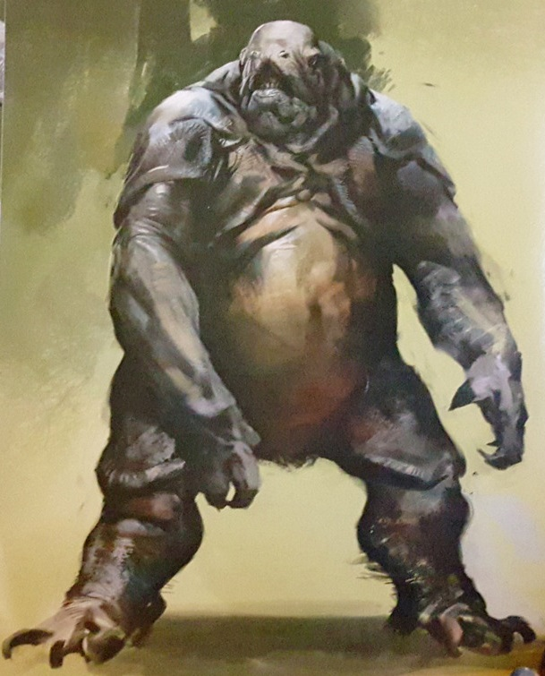

Humain
Leur vie changea du tout au tout après la découverte du Voyageur. L'humanité profitant dès cet instant d'un Âge d'or. Période pendant laquelle les avancées technologiques, scientifiques ou médicales avancèrent à une vitesse folle. Mais toutes les bonnes choses ont une fin, et un siècle plus tard, les Ténèbres pointèrent le bout de leur nez. Les morts furent innombrables et les survivants se sont réfugiés dans la Dernière Cité... Survivants de l'effondrement, les humains sont résilients, ingénieux, et toujours prêts à défendre la Dernière Cité. Leur détermination n’a pas d’égal.

Éveillé
Les Éveillés sont en quelque sorte les Elfes de service. Il s'agissait autrefois d'humains souhaitant fuir le système solaire après la mort du Voyageur. Cependant, un fait étrange se déroula lors de la traversée de la ceinture d'astéroïdes entre Mars et Jupiter, et ils furent transformés à tout jamais en ces êtres de couleur bleue. Certains Éveillés décidèrent de rester sur place, tandis que d'autres revinrent sur Terre. Mystiques et élégants, leur lien avec les forces cosmiques les rend uniques et imprévisibles.

Exo
Il s'agit d'une race créée par les Humains pendant l'Âge d'or, dans le simple but de les protéger. Après l'effondrement de l'âge d'or, les Exo ont perdu la mémoire et se sont en quelque sorte réinitialisés. Ils n'ont plus aucune idée de leurs objectifs initiaux et vivent donc leur vie en tant que mi-homme, mi-robot. Des machines dotées d'âmes humaines. Créés pour la guerre, les Exos luttent pour préserver leur humanité à travers mémoire, combat et loyauté.

Déchus
Les Déchus sont une race nomade errant de planète en planète. Ils ont la particularité d'avoir quatre bras. On les retrouve en effet autour de la Terre, et notamment sur la Lune, Vénus et Mars. Très orientés haute technologie, ils disposent d'un arsenal militaire impressionnant. Leur faiblesse vient surtout de leur dépendance à l'éther. Leur armure leur sert d'ailleurs à maintenir l'éther auprès d'eux, de la même manière qu'une combinaison spatiale permet aux humains de respirer et vivre dans l'espace. Ancienne civilisation autrefois bénie par le Voyageur, les déchus errent aujourd’hui en quête de rédemption, entre piraterie et alliances fragiles.

Cabal
Ces humanoïdes massifs, qui peuvent peser des centaines de kilos et mesurer jusqu'à 2m40, sont extrêmement militarisés n'ont qu'une idée en tête : étendre leur empire. Empire militaire discipliné et conquérant, les Cabals vivent pour la gloire et la stratégie. Leur force brute est aussi redoutable que leur orgueil.

Psion
Créatures intelligentes liées aux Cabals, les Psions possèdent des pouvoirs psychiques impressionnants. Ils manipulent l’esprit et le temps à leur avantage.